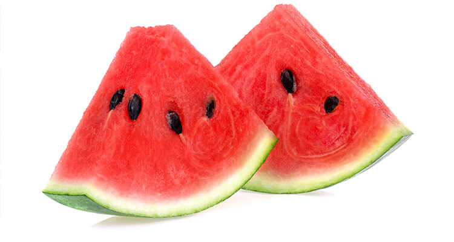
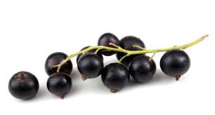

Arbuz
Arbuz należy uprawiać na stanowiskach słonecznych i ciepłych, osłoniętych od północy. Roślina wykazuje najlepszy wzrost w szklarniach i tunelach foliowych. Gleba powinna być żyzna, dobrze nawożona oraz o odczynie pH 5,5-6,0. Arbuz należy wysiać na rozsadę, a wyrośnięte sadzonki należy zasadzić do gleby w maju lub czerwcu. Należy chronić arbuzy przed nocnymi niskimi temperaturami. Należy często nawozić arbuzy w okresie kwitnienia. Należy nie dopuszczać do przesuszenia gleby, powinna być regularnie podlewana optymalną ilością wody, aby nie dopuścić do przelewania gleby.
|  |
|---|
Porzeczka
Porzeczki sadzimy z krzewów na glebach żyznych i półprzepuszczalnych, ale rosnąć będą na każdej glebie. Jej odczyn pH powinien wahać się pomiędzy wartością 6,0 a 6,5. Miejsce wokół łodygi należy wyłożyć ściółką, co pomoże na magazynowanie wody. Stanowisko powinno być słoneczne i osłonięte od wiatru. Cięcie krzewów należy wykonać co 3-5 lata. Zimą należy zabezpieczyć rośliny przez niskimi temperaturami.
|  |
|---|